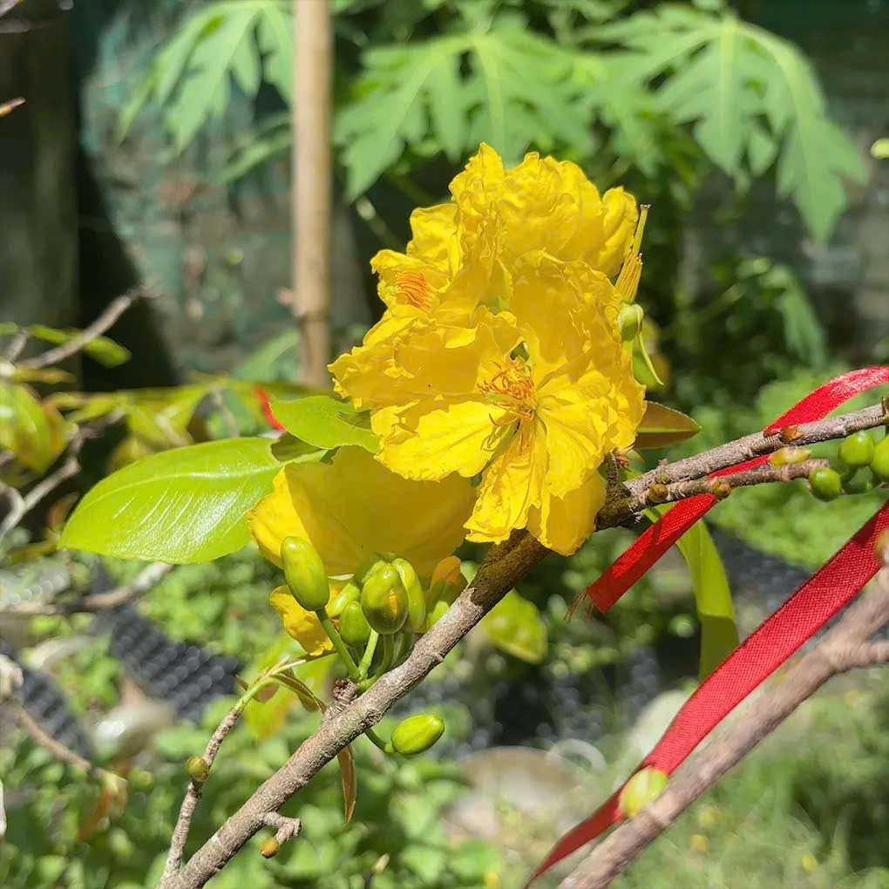
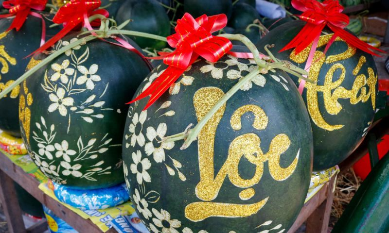
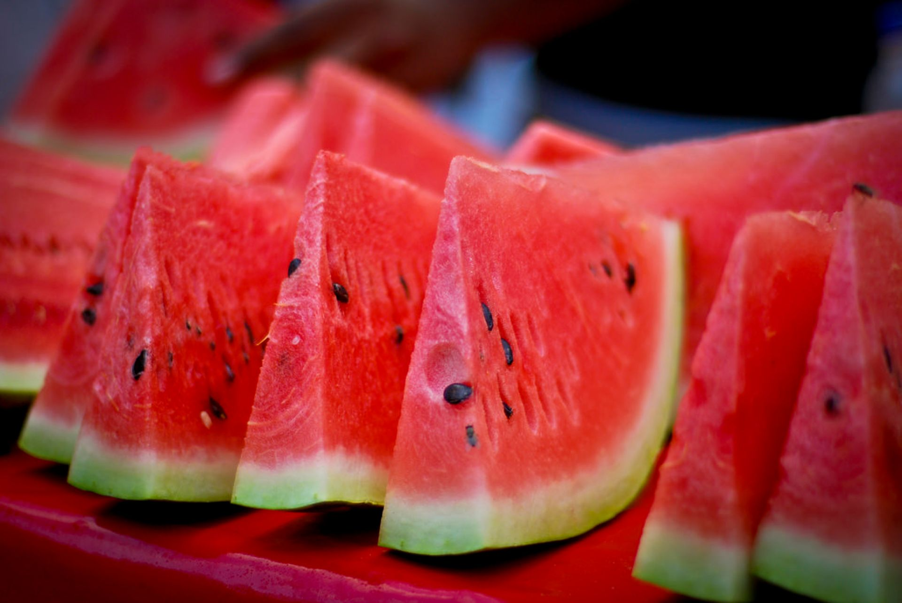

Hoa mai vàng, dưa hấu đỏ, đông vui nhộn nhịp.



Tết là dịp thiêng liêng để mỗi gia đình sum họp sau một năm học tập và làm việc vất vả. Dù đi làm xa hay học ở nơi khác, mọi người đều cố gắng trở về nhà để cùng nhau đón giao thừa và ăn bữa cơm đoàn viên. Không khí trong nhà trở nên ấm áp hơn khi cả gia đình quây quần bên mâm cơm, chúc nhau những điều tốt đẹp cho năm mới. Những câu chuyện của năm cũ được kể lại trong tiếng cười rộn ràng, xua tan mọi mệt nhọc. Chính sự sum họp ấy đã làm cho ngày Tết trở nên ý nghĩa và trọn vẹn hơn bao giờ hết.